Here's where to find English books in Saigon
With my wedding around the corner after almost a decade in Vietnam, it seems reasonable to suggest I may stay here for a while longer. Which means I can finally buy real printed books and introduce my well worn Kindle Oasis to the drawer usually reserved for condoms and a sewing kit.
And thus the hunting began. 18 stores, multiple visits to each, and almost 400 books purchased. Half of which are in English.
Below are the bookstores I've found, ranked, and reviewed based on what I'm personally looking for.
Pages of Passion
35 Nguyễn Văn Tráng, Phường Phạm Ngũ Lão, Quận 1
(Google Maps)
Hidden on the top floor of an old building full of boutique coffee shops is one of the few things I am thankful to TikTok for (my fiancée discovered it there).
Pages of Passion is my bar-none favourite bookstore in the city. Wooden floors, floor to (almost) ceiling wooden shelves, and thousands of English books that I'll easily spend an hour-plus browsing each time I visit. Much to my fiancée's dismay.
Their selection includes brand new and second-hand, across every genre imaginable. Multiple shelves of classics, endless business reads for me, the front half of the store full of fiction, and pretty much everything in between.
I've already purchased 27 books here. Which has already increased by 6 in the writing of this post.

On the second hand side, I find them rather pricey. But their selection is so great, I really couldn't care less.
Also the kittens are adorable.
Verdict: Get your butt over there. Bring plenty of money to buy more books than you have time to read. And do not forget to pet the kitty.
Bá Tân
451/22 Hai Bà Trưng, Phường Võ Thị Sáu, Quận 3
(Google Maps)
I never leave this place without dripping in sweat. Partly because it's hot and lacks AC, but just as much because there so many books to look through.
For English books, you'll want to ignore the large downstairs and head up to the little room upstairs. It's another one of those, pop off your shoes type places. There's another shop further up, same people, but it's mostly Vietnamese comics and little in English. Worth a check though, as I found some vintage Russian novels there before.
This store has my second highest purchase count at 22. But most interesting is the mix of genres I've found.

They have so much variety, and it's reasonably priced, similar to most second-hand stores. The sort of place you'll want to dig through every nook and cranny to see what comes out. Some of my best buys were found right before I planned to leave.
They also have kitties.
Verdict: If you're looking for second-hand books, not photos of yourself pretending to buy second-hand books, then go check this place out. There's a good chance you'll find something you like.
Nhà Sách Xưa
This wonderful little local second-hand bookshop brand has two separate locations with such different vibes I struggle to understand why they're named the same. So let's cover them separately.
Bình Thạnh
125/69 Nguyễn Văn Thương, phường Thạnh Mỹ Tây, Bình Thạnh
(Google Maps)
This was the first location I've visited. It's near Gia Định High School in a quiet little alley. Inside is clean, cosy, and contains this wonderful little invention called air conditioning.
It also has a fairly weak selection of English books, but it's cheap. Seriously cheap. Most books I've purchased are 80k-150k each. I even grabbed a classic Napoléon book in French (which I don't read) for 120k because it looked too good not to be on my bookshelf.
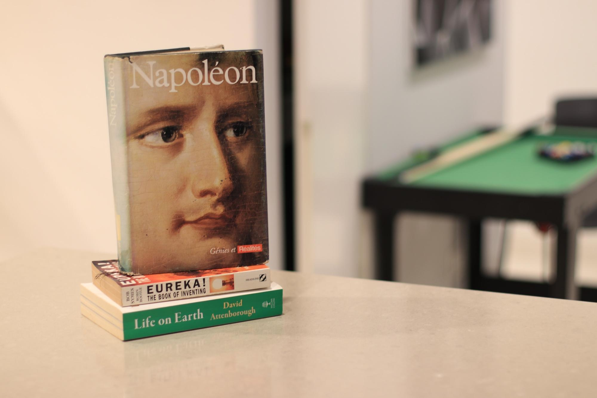
If you want to check it out, I think it's a great little store. If you read Vietnamese, it's fantastic. But their selection is not so great for English. At my last look they have some old popular novels, random books probably from a kids library, and a fair few self help books.
Verdict: Check it out for fun if you like exploring bookstores, but it's very likely you don't find anything if you have specific interests.
Quận 10
OO19 Bạch Mã, Phường Hòa Hưng, Quận 10
(Google Maps)
The district 10 store is a completely different vibe. It's proper local, the books are more dusty, there's no AC, I've been there twice in the afternoon and it was just randomly closed.
But boy, do they have books that I like. I'm up to 15 purchases so far. And there's more I could have purchased, if I hadn't already elsewhere.

They have a lot of business and finance books, which is my go-to. There are stacks of fiction books that I have little interest in, so can't tell you if they're good. And some other non-fictions too that are interesting.
One oddity I found was a selection of pickup dating books like The Game and The Mystery Method, which is a really funny collection to find out here.
Verdict: Seriously worth a look, may have something you like. May not. Part of the fun of hunting. Prices similar to everywhere else, less than Pages of Pages, higher than the Bình Thạnh branch.
Trần Nhân Tôn, Q5
This whole street is kinda dirty, the books are probably covered in dust, there's no AC... and yet, it freaking rules. I've purchased 24 books from 5 stores here so far, with some really surprising finds.
Let me review each one individually:
Phước Hậu Bookstore
59 Trần Nhân Tôn, Phường 9, Quận 5
(Google Maps)
This shop has my number. For most people it honestly has a very limited selection for English books. But almost all of them are business, with some science and others mixed in. Along with a whole bunch of very old, very dirty (read: literally) fiction books near the back.
My fiancée also swears this has the best historical romance novels in Vietnamese. If you happen to be the other guy as obsessed with books as me that's able to find such a girl to tolerate you. And she likes the same books. It's probably not happening. I don't know why I suggested it. I'm sorry.
Verdict: If you love business books, leave this place alone for me please. They have more, but it's only one shelf. And the back is stacked with old fiction novels, which are worth it for the price, but mostly poor condition. Honestly, this place is for hunting, prepare not to find anything.
Minh Bookstore
23 Trần Nhân Tôn, Phường 9, Quận 5
This place has an inconceivable amount of books. One because they have a lot, two because they're stacked so insanely above, behind, and in front of each other that you'd be lost at counting them.
A pure hunting ground if you love getting your fingers dirty as you pile through books. For my tastes though, it's not been a major success.
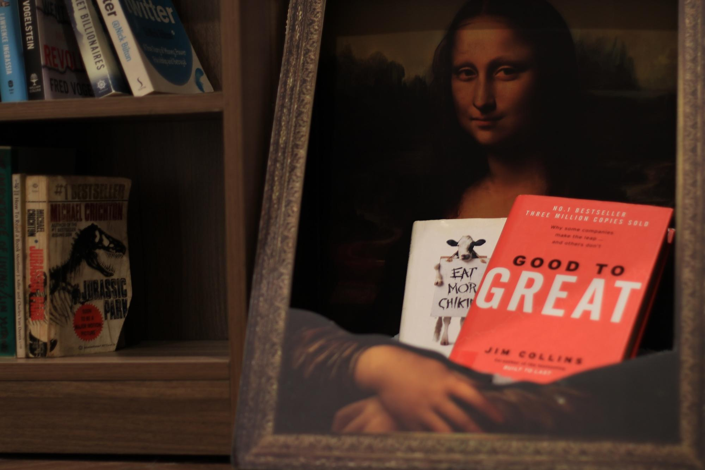
Also you have to take off your shoes to go inside. I know it's not a big deal, but I'm lazy okay.
Verdict: If you're a book hunter, go for it. If you want to just look at some nice books and buy some, avoid.
Hồng Phúc
13 Trần Nhân Tôn, Phường 9, Quận 5
This one barely deserves a mention. I tried to go back a second time and they had like 3 English books. So I'd suggest skipping if not for one special case:
My first ever visit here, they had Maury Klein's The Life and Legend of Jay Gould. This blew my mind. I mean what an obscure book of an obscure character. Even as someone obsessed with the Rockefellers, Vanderbilts, Morgans, etc had not heard of him until recently. Yet, this tiny shop in Vietnam had it?
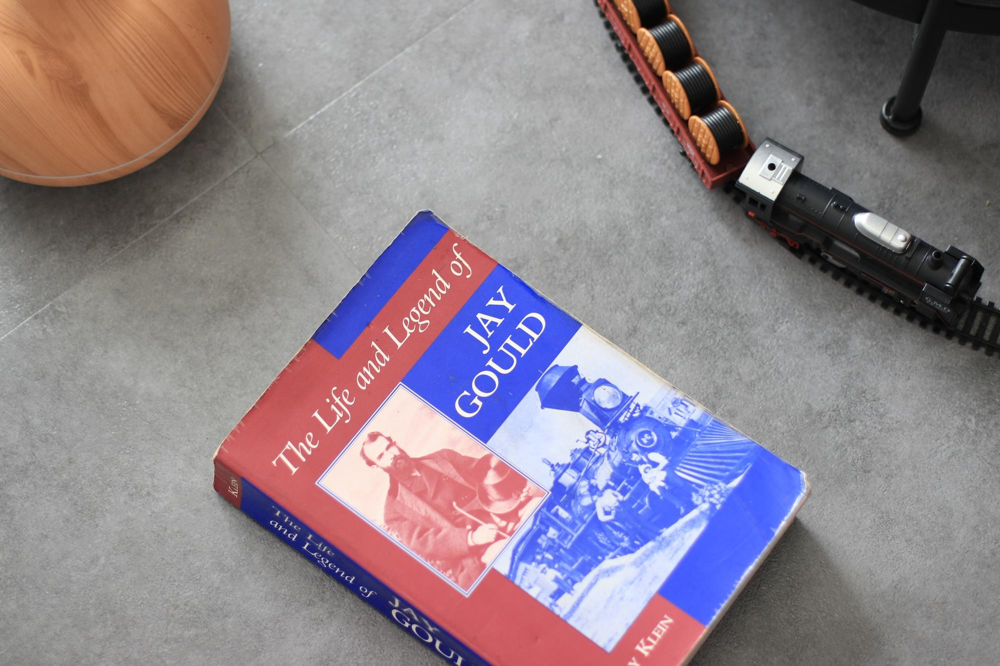
Verdict: So no, probably don't go there. Or do go there because maybe, just maybe, they have some book that you'd never expect to find. But probably not.
Tam Lợi
11 Trần Nhân Tôn, Phường 9, Quận 5
Another tiny little store near the top of the street, with books stacked about 7 feet high. But damn, this place has something special.
Sure, the selection is rather limited. It's a book hunters place. But the owner is just so lovely, clearly a bookworm himself. He happily shuffles the books around for me to scan all, takes out any I ask, suggests ones I may like, and gives reasonable prices.
I was even lucky enough to find a mint condition of The Snowball: Warren Buffett and the Business of Life for only 300k. Along with 6 other books.
Verdict: You just have to go and hunt through if you're in the area. I've found a few fun reads. You may find none. Another hunters place, the whole street is really.
Tấn Hiệp
7 Trần Nhân Tôn, Phường 9, Quận 5
Right at the top of the street, for my personally, it barely deserves a mention. I never check it anymore as I start from the higher numbered stores and work my way down, usually buying far too many before I reach here.
I bought one book here, once, because it said something-something-space and I thought, novel and space, I'm in. Besides that, I couldn't find anything of interest to me, nor on the next visit or two. They do have some English books though, so maybe better for others tastes?
Verdict: You're already on the street, doesn't hurt to look.
Trần Huy Liệu, Phú Nhuận
This is another second-hand book street that I keep returning to again and again. There's 5 bookstores here, but only two I've found have anything in English. Let's cover both separately.
Momo
205 Trần Huy Liệu, Phường 8, Phú Nhuận
(Google Maps)
The most popular one on this street, but not my personal favourite. It's still great though, just not a lot for me personally. "Not a lot" meaning I've purchased only 9 books.
Again, prepare to sweat. And to leave your shoes at the door. All the English books are upstairs. They've got art books, classics, lots of thrillers, kids books, and more. Including a cat they call the devil.
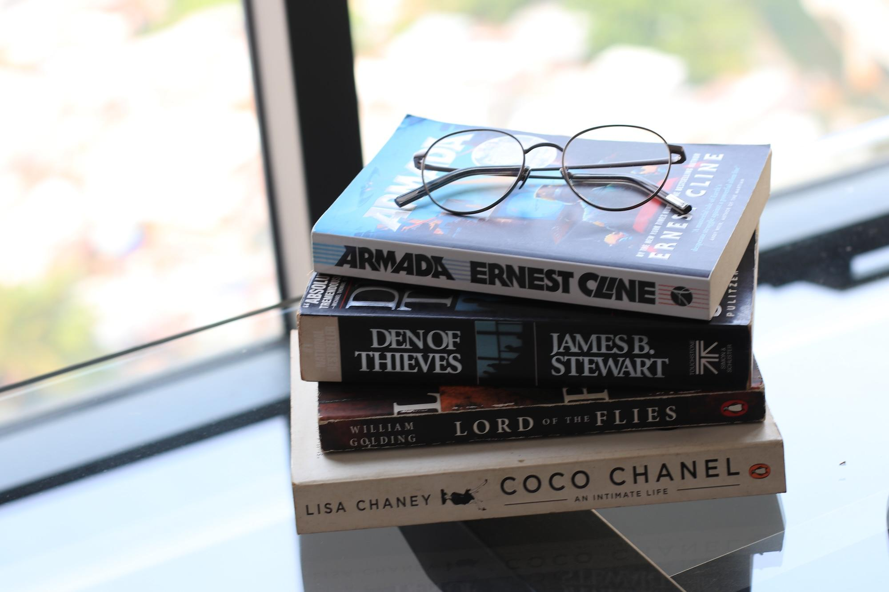
My challenge is more the lack of business books. But that's just me. And I still check it regularly to see if they've got anything new. Their website also has plenty.
Verdict: Go check it out and see if their selection fits your interests. If you're a business nut like me, check it anyway, but save your money for the next place.
Sách Cũ Tổng Hợp
160 Trần Huy Liệu, Phường 8, Phú Nhuận
This place is my jam. It probably has less selection than Momo. My fingers end up black with dust and dirt from touching all the books, and some, like a copy of Ready Player One that was just too dirty and damaged to be worth buying.
But for my interests? It's pretty fantastic. Great selection, great prices.
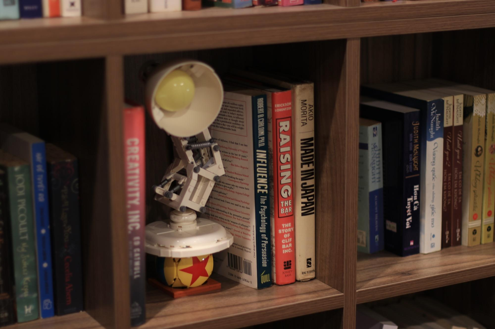
My fiancée shares a similar opinion, with a stack of romance novels she's purchased here. I have no idea what they are to comment further.
The old couple running it are also lovely. And maintain a Facebook Page with their newest books.
Verdict: For business readers, you have to check it. For others, there's actually a bunch more that I totally ignore, so go check and see if that's your vibe. Definitely worth it while checking Momo anyway.
Phương Nam
Or what I called for years "Book Store" and "Book City", never remembering what the actual name is.
These are all over the city and probably the best spot for new English books, edging slightly over Fahasa in my opinion. Plenty of business, classics, fiction, self-help, even found some Hitchhikers Guide to the Galaxy.
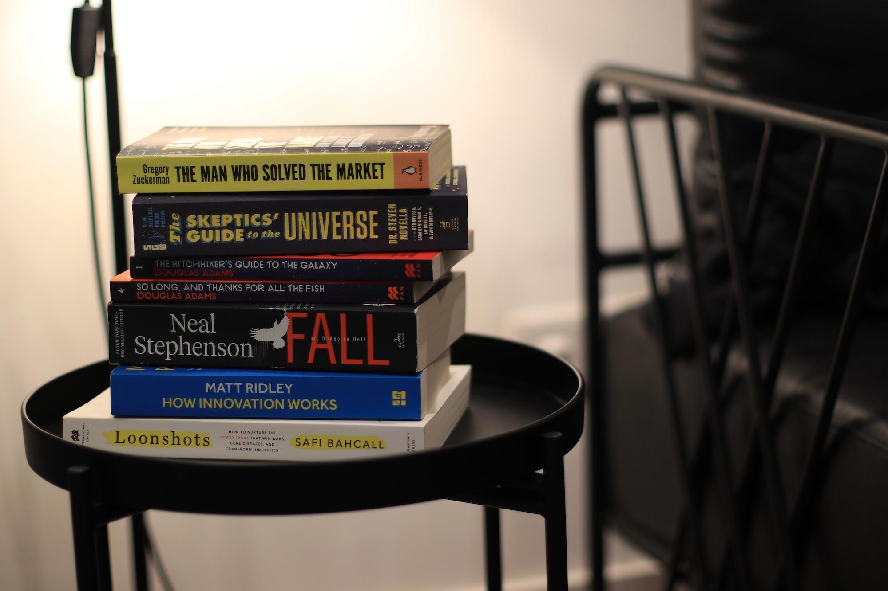
A few locations that I've personally visited include:
- 212 Nguyễn Trãi, Q1 (Maps)
- Saigon Centre, Q1 (Maps)
- Vạn Hạnh Mall, Q10 (Maps)
- Vincom, Q1 (Maps)
Their "Book City" stores have the greatest selections. With the Vạn Hạnh being my personal favourite, partly because the store is cooler, partly because they have a clearance section for damaged books you can hunt for deals.
Verdict: Don't miss their Book City stores (Vạn Hạnh Mall and 212 Nguyễn Trãi). But you don't get the joy of hunting second-hand, so I'd always exhaust those first. Then again, I'm just marginally more socially acceptable than a stamp collector.
Fahasa
40 Nguyễn Huệ, Bến Nghé, Quận 1
(Google Maps)
My first bookstore in Vietnam. What finally led me think, huh, this place could work.
The Nguyễn Huệ location is the best of the best. There's another in Thiso Mall and another on Lê Lợi, probably others, they are irrelevant. Walking street is the place to go.
They have new releases, 3-4 different editions of Harry Potter, sci-fi, classics, business, self-help, romance, you name it. I'd say similar-ish to Phương Nam, but my fiancée and I both seem to buy more at PN. 18 vs 15 for me.

All brand new books here, no discount sections, but plenty to choose from. One of my favourite buys here was a book I found hidden in a stack called "The Game Makers", which is the story of The Parker Brothers behind the success of Monopoly and many others.
Verdict: Go there, they probably have what you want. But I'm gonna keep banging this drum that says hunt second-hand stores first, even if I'm the only one who cares.
InBook
25A Nguyễn Bỉnh Khiêm, Phường Sài Gòn, Quận 1
(Google Maps)
Opposite the zoo, upstairs from a little coffee shop, is a tiny little bookstore that I love visiting. Brand new books, entirely in English, many of which I've not seen elsewhere.
Their classics collection is gorgeous. Not just so many classics, but beautiful editions. For me, I'm all about that sci-fi. I've purchased 5 books, all sci-fi, including: The Martian, The Supernova Era, Starter Villain, Children of Time, and Exhalation.

If you're not a sci-fi nerd, trust me, these are legendary. And Starter Villain, but who cares it's fun.
There's a bunch of business, other fiction, science, fantasy, and more. So it may have something for you.
Verdict: Go check this one or try their website. If you've checked everywhere else, they may have what you're looking for.
Hải An Bookstore
2B Nguyễn Thị Minh Khai, Đa Kao, Quận 1
(Google Maps)
I love this building with all the floors. I wish it were my office. They've also got plenty of seating, which I've never used.
Their selection is average, noticeably lacking compared to Fahasa and Phương Nam, but a fair few English books too. I've only ever bought 4 here, despite visiting at least 12 times as it's so near my home.
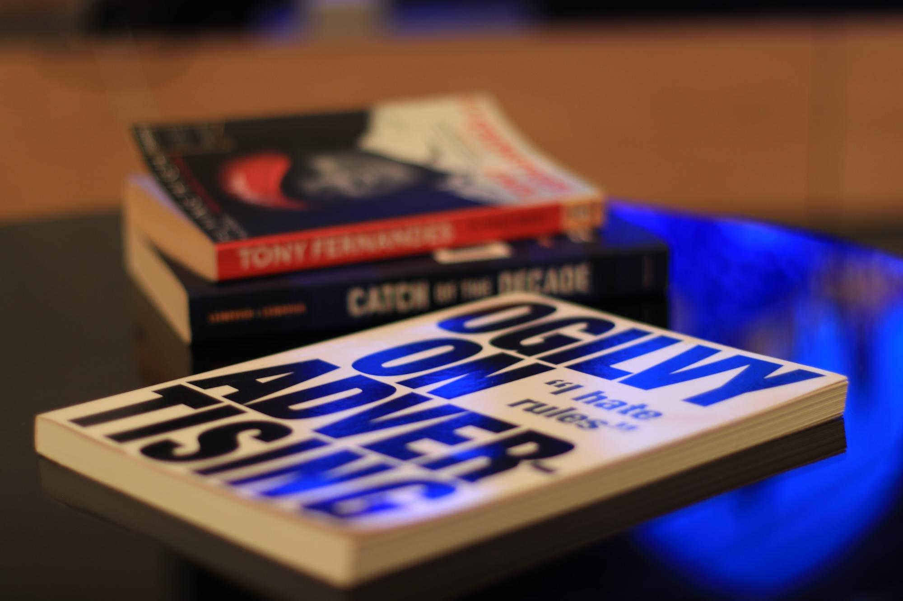
For English books, they're all on the ground floor, just one big shelf front and back. The rest of the floor is Vietnamese books, and upstairs there's stationary, toys, and much else. Cool store, not the best for English books.
Verdict: If you're in the area, drop by. The building is so cool. The selection is small so you may not find anything.
Vesta Lifestyle & Gifts (Thao Dien)
34 Ngô Quang Huy, Thảo Điền, Thủ Đức
(Google Maps)
This cute little shop barely qualifies as a bookstore. It's simply a store that happens to have some books. But it's smack in the middle of Thao Dien, so they actually have a fair few expat-friendly books.
I've been here exactly once, purchased two books: Sahil's The Minimalist Entrepreneur and Dogfight How Apple and Google Went to War and Started a Revolution (the latter because it was cheap). Spotted some interesting ones too: a couple sci-fi titles and a lovely hardcover of Capital in the Twenty-First Century.
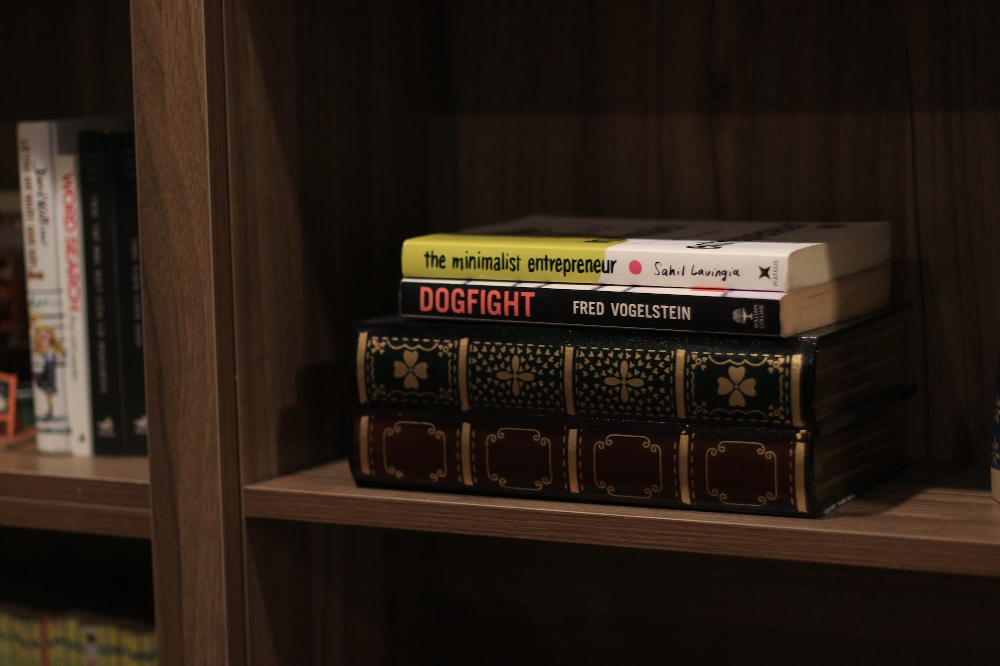
But I'd say this is mostly a place for tourists and expats to offload their airport reads. You know the type, bestsellers you grabbed at W.H. Smiths before a 14-hour flight. Plus some souvenir-type stuff.
Verdict: If you're in the area, drop by. But don't make a special trip, unless you want candles or similar gifts.
Nhà Sách Anh Quốc
7-9 Nguyễn Gia Trí, Phường 25, Bình Thạnh
(Google Maps)
Despite what the name may suggest, this is not an English bookstore. Nor does it have anything, as far as I can tell, related to England. In fact, I'd estimate there were only about 10 English books in the whole store.
But also, a couple of those 10 were interesting. And so I bought one.
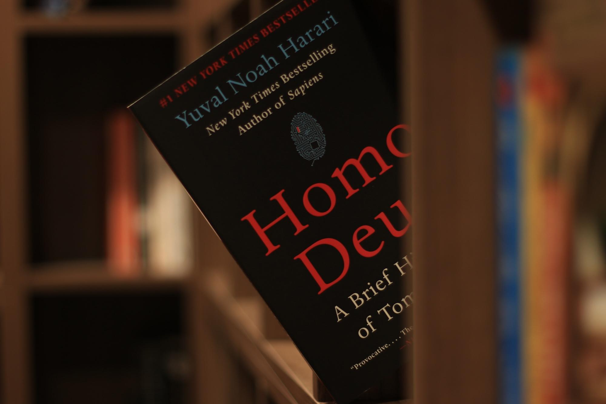
Homo Deus by Yuval Noah Harari. I'd read it years ago, but at 200-odd-k and the last one for my collection, why the heck not.
Verdict: Don't waste your time going there.
The Hidden Spine (D3)
58/15 Phạm Ngọc Thạch, Phường 6, Quận 3
(Google Maps)
This place reads more TikTok trend than bookstore. It does look nice. It's cute. But the selection is fairly weak, both English and Vietnamese. And it's priced practically as brand new books.
It was also the first second-hand bookstore I'd been to, first time I'd seen Jack Reacher novels in Vietnam, and thus still holds at 6 purchases for me.
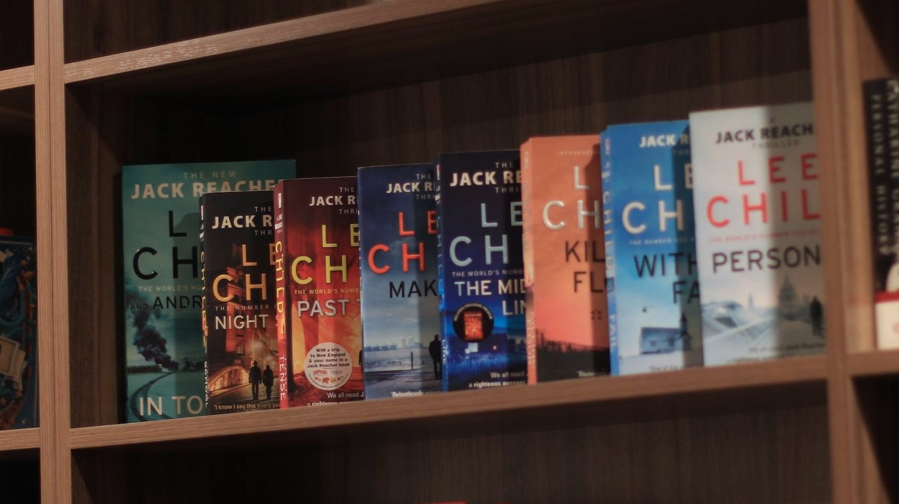
But I've never been back. And don't plan to.
Verdict: Skip it. Unless you want a clean place to show off on your TikTok.
Bonus: Book Metro Vietnam
I'm cheating because this place isn't even in Saigon, nor do they have a store. But I think it's worth mentioning for one specific reason:
If you want anything, they can get you it.
Is it the same quality as buying a book? No. Is the paper amazing quality? No. It's like a basic print-on-demand service in the UK.
But I don't care. Any book you want, that's just not available in Vietnam, they've got it. For me that means obscure out-of-print business biographies.
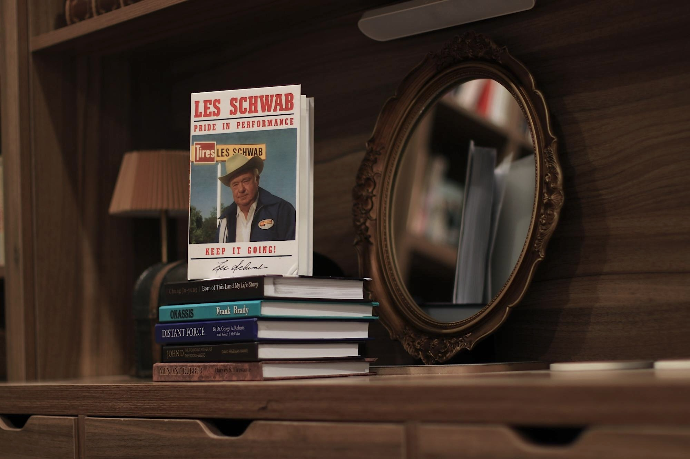
Depending on how many you order, I tend to order far too many, it takes 7-10 days to process them and another 2-3 days of shipping. Pricing is similar, maybe a bit cheaper than second-hand.
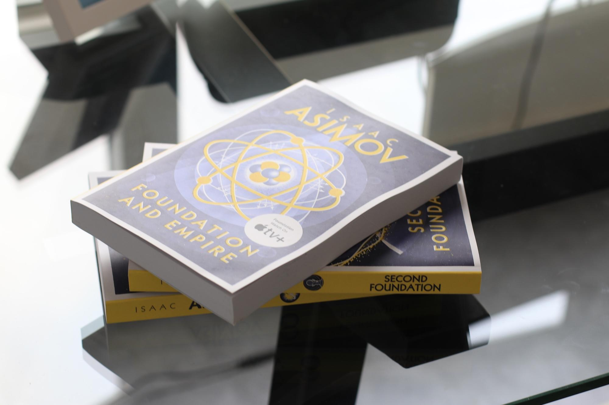
Verdict: If there's a book you really want, and importing it via an Amazon service isn't worth it to you, then just send it to these guys.
So there you have it. 19 stores, 50+ visits, 400 books purchased, 4,000 sifted through. And a home library that gets so much care and attention, my fiancée has resorted to an endless supply of romance novels to fill the emotional gap.
Whether you're looking for business biographies, sci-fi, romance novels, or just want to pet some bookstore cats, there's something here. Start with Pages of Passion, work your way through the second-hand streets, and try not to steal my books.
Seriously. Business biographies. I've said it enough. If it's not mentioned in this post already, leave it for me. Call it a recommendation tax.